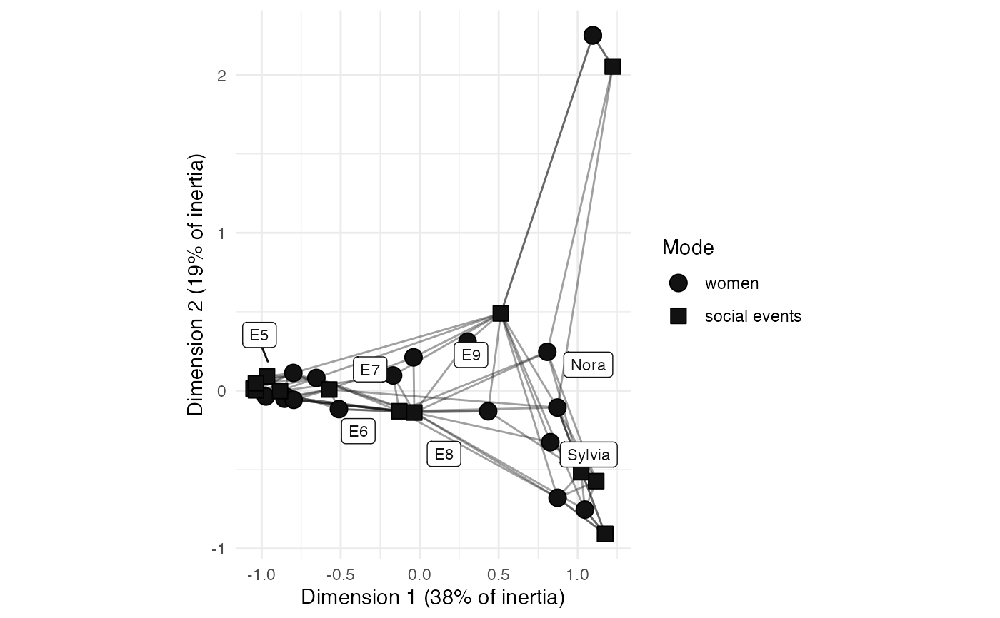

The "correspondence" layout places nodes by correspondence analysis, so that two nodes are drawn together where they have similar ties. Where the "scaling" layout reads the paths between nodes, this one reads the profile of each node's ties, and so two nodes with no tie between them can still be drawn together if they are tied to the same others.
This is the usual way to draw a two-mode network, since correspondence analysis takes a rectangular table and places its rows and its columns in one space. Both modes are therefore drawn on one pair of axes.
Like the "scaling" layout, the coordinates can be read, and so this layout draws labelled axes at a fixed ratio. Each axis is labelled with the share of the network's inertia that the dimension holds.
Source
Greenacre, Michael. 2017. Correspondence Analysis in Practice, 3rd ed. Boca Raton: Chapman and Hall. doi:10.1201/9781315369983
Lorenzo-Seva, Urbano. 2011. "Horn's parallel analysis for selecting the number of dimensions in correspondence analysis", Methodology 7(3): 96-105. doi:10.1027/1614-2241/a000027
Constantine, A.G., and John C. Gower. 1978. "Graphical representation of asymmetric matrices", Journal of the Royal Statistical Society C 27(3): 297-304. doi:10.2307/2347234
Arguments
- .data
Some
{manynet}compatible network data.- direction
Which ties to read for a directed network, as one of "all", "out", or "in". By default this is "all", which reads a tie in either direction, so that each node has one position. "out" places each node by the ties it sends, and "in" by the ties it receives. This is ignored where the network is undirected or two-mode.
- double
Whether to split each tie into a positive and a negative part, so that a signed network can be drawn. By default this is
FALSE, and a signed network is not drawn, since correspondence analysis is not defined for a negative tie.- circular
Should the layout be transformed into a radial representation. Only possible for some layouts. Defaults to FALSE. Required for
{ggraph}compatibility.- times
Maximum number of iterations, where appropriate. Required for
{ggraph}compatibility, and ignored by the layouts that do not iterate.
Details
Correspondence analysis divides the ties of each node by how many ties that node has, and so places nodes by the shape of their ties rather than by how many they have. The distance drawn is the chi-square distance between two such profiles.
A two-mode network is read as its incidence matrix, one row for each node of the first mode and one column for each of the second. A one-mode network is read as its adjacency matrix instead, as is a multimodal network that has ties within its modes as well as between them, so that no tie is dropped.
Tie weights are read as they are, since correspondence analysis was built
for counts and a weight counts in the same way.
A negative weight has no such reading, which is why a signed network
needs double = TRUE. That stacks the positive network and the negative
network side by side, doubling the width of the table,
so that a node is placed by both who it is tied to positively
and who it is tied to negatively.
A pair of nodes with no tie between them counts in neither half.
Reading the plot
Two nodes of the same mode drawn together have similar ties.
A node drawn near the origin has a profile close to the average,
or is held poorly by the two dimensions drawn: these are not the same
thing, and graphr() names the nodes for which it is the second.
A node of one mode drawn near a node of the other mode is not necessarily tied to it. Only the distances within a mode can be read this way.
Where a network runs along one strong gradient, correspondence analysis draws it as an arch rather than as a line. This is expected of the method, and the second dimension then repeats the first rather than adding to it.
Where a network is disconnected, the first dimensions merely separate its components, and say little about the nodes within them.
Reading the inertia
The share of inertia a dimension holds is not a share of variance
explained, and does not have a fixed ceiling to be read against.
It is a share of however many dimensions the table has,
which attr(x, "fit")$scree reports in full.
Two dimensions of a table that has twelve start from a base of a sixth;
two of a table that has thirty start from a base of a fifteenth.
Compare the share drawn against that base rather than against 100%,
and note that this can reverse the ranking the raw shares suggest.
Bear in mind that an even share is a lenient base, since inertia is
never spread evenly; the broken stick model asks what the dimensions
would hold if the inertia were divided at random, and is the harder test.
Neither is a standard statistic, and neither carries a threshold,
so read them as a check on the raw share rather than as a verdict.
graphr() says so at the console where two dimensions hold no more
than a random division of the inertia would give them.
To choose a number of dimensions properly, see Lorenzo-Seva (2011).
These shares need no correction. The Benzécri correction, and Greenacre's adjusted version of it, exist because the indicator matrix that multiple correspondence analysis is run on invents dimensions that deflate every share. This layout runs simple correspondence analysis on one two-way table, which invents nothing, so the shares reported are already exact.
Examples
graphr(manynet::ison_southern_women, layout = "correspondence")
